2024年度
2025年3月22日
今井研究室の大学院修士課程2年生1名、学部4年生12名が無事修了・卒業を迎えました。おめでとう！ 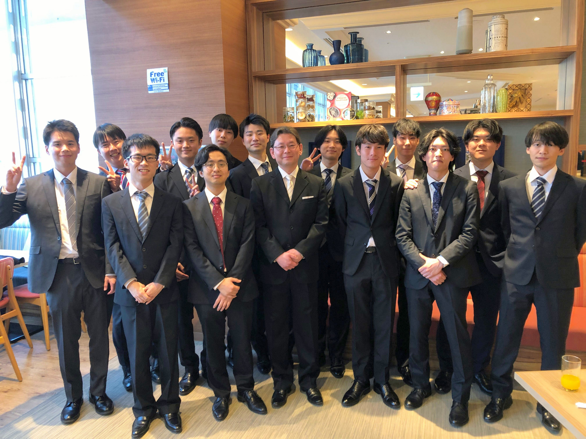 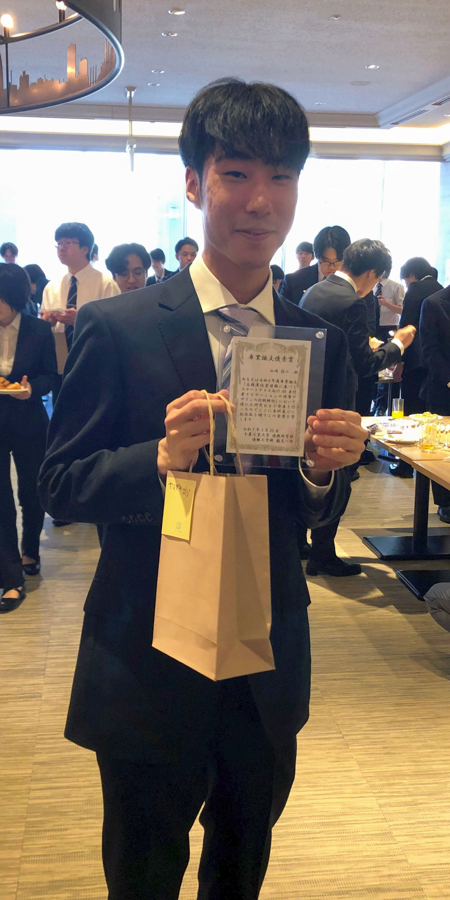 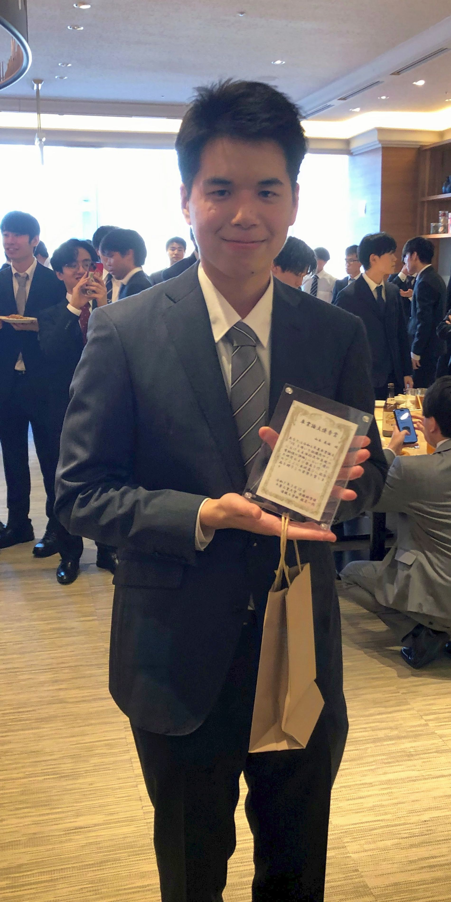
{kind=link}
{kind=link}
{kind=link}
2025年1月24日
卒業論文発表会が行われました。
2025年1月21日
修士論文発表会が行われました。
2024年12月14日
生命ソフトウェア・感性工房・而立の会 合同シンポジウム2024（香川大学）において下記の発表を行いました。
- 秋山穂人, 今井順一, "ARマスキングにより文章領域の視覚刺激を低減する紙媒体文書読解時の集中促進手法"
- 川上将之介, 今井順一, "瞬き頻度から推定した集中度に基づき休憩を促す学習支援システム"
- 山﨑侑二, 今井順一, "スマートグラスを活用したAR歩行者ナビゲーションの誘導デザインの比較"
2024年12月12日
今井教授が令和6年度前期グッドレクチャー賞（対象科目：「ヒューマンインタフェース」）を受賞しました。
2024年9月28日
国際会議 23rd International Conference on Computer Information Systems and Industrial Management Applications (CISIM 2024; Bialystok, Poland) において下記の発表を行いました。
- Tsubasa Takamatsu and Jun-ichi Imai, "Subjective Impression Perceived from Agent that Can Recognize Discrepancy in Visual Perception of Situation"
2024年9月17日
学部3年生12名が新メンバーとして今井研究室に加わりました。
2024年9月3日
卒業論文中間発表会が行われました。
2024年7月5日
下記の論文が International Journal of Affective Engineering 誌に採録されることが決定しました。
- Rin Takenowaki and Jun-ichi Imai, "Effects of Simultaneous Expression of Multiple Opinions by Single Agent on User's Subjective Impression"
2024年4月1日
教員1名、大学院生1名、学部4年生12名の体制で今井研究室15年目のスタートです。
情報変革科学部 認知情報科学科の所属に変更になりました。情報科学部 情報工学科の学生もこれまで通り受け入れます。
2023年度
2024年3月22日
今井研究室の大学院修士課程2年生3名、学部4年生11名が無事修了・卒業を迎えました。おめでとう！

2024年1月23日
卒業論文発表会が行われました。
2024年1月19日
修士論文発表会が行われました。
2023年9月23日
国際会議 22nd International Conference on Computer Information Systems and Industrial Management Applications (CISIM 2023; Tokyo, Japan) において下記の発表を行いました。
- Rin Takenowaki and Jun-ichi Imai, "Investigation of Subjective Impression Perceived from Agent that Expresses Multiple Opinions Simultaneously"
2023年9月14日
学部3年生12名が新メンバーとして今井研究室に加わりました。
2023年9月9日
生命ソフトウェア・感性工房・而立の会 合同シンポジウム2023（北海道情報大学 札幌サテライト） において下記の発表を行いました。
- 谷久博規, 今井順一, "VR環境における没入感の維持に焦点を当てた実環境の危険通知手法の検討"
- 深澤拓光, 今井順一, "姿勢推定に基づき修正点の指摘内容をエージェントが誇張して再現する動作学習支援システム"
- 喜多杏美乃, 今井順一, "エージェントシステムにおける否定的助言の有用性の検証"
- 秋山穂人, 今井順一, "紙媒体での学習効率向上を目的とした周辺視野の視覚刺激を減衰するARマスキング"
2023年9月5日
卒業論文中間発表会が行われました。
2023年7月20日
下記の論文が日本感性工学会論文誌に採録されることが決定しました。
- 喜多杏美乃, 今井順一, "否定的助言における「可もなく不可もない」情報の提示がエージェントへの信頼感に及ぼす影響の基礎的検討 ―3択タスク環境における信頼感への影響の調査―"
2023年4月1日
今井研究室14年目は教員1名、大学院生4名、学部4年生13名の体制でスタートです。
2022年度
2023年3月22日
今井研究室の大学院修士課程2年生1名、学部4年生10名が無事修了・卒業を迎えました。おめでとう！ 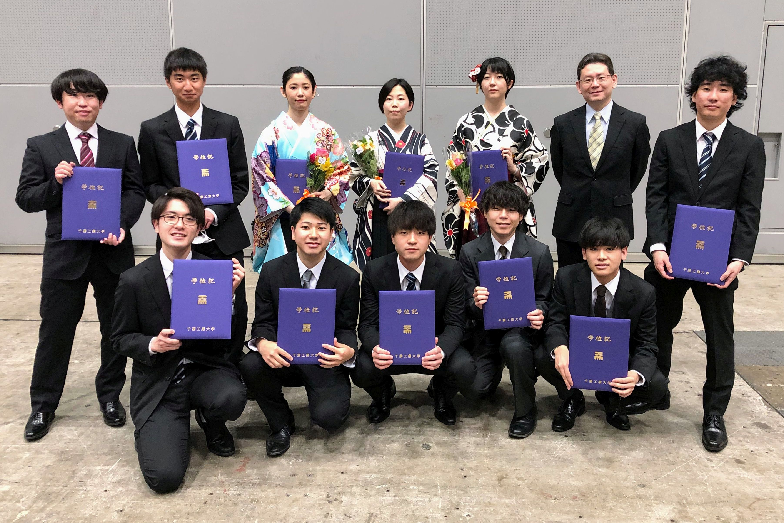
{kind=link}
2023年1月18日
卒業論文発表会が行われました。
2023年1月16日
修士論文発表会が行われました。
2022年12月11日
生命ソフトウェア・感性工房・而立の会 合同シンポジウム2022（サテライトキャンパスひろしま） において下記の発表を行い、うち1件が最優秀発表賞を受賞しました。
- 谷久博規, 今井順一, "VR環境における没入感を阻害せずに実環境の危険を通知するエージェントシステム"
- 喜多杏美乃, 今井順一, "「可もなく不可もない」情報を用いた否定的助言がエージェントへの信頼感に及ぼす影響"
（最優秀発表賞） - 深澤拓光, 今井順一, "姿勢推定に基づきエージェントが理想姿勢からの修正点を指摘する動作学習支援システム"
{kind=link}
{kind=link}
2022年9月15日
学部3年生12名が新メンバーとして今井研究室に加わりました。
2022年9月5日
卒業論文中間発表会が行われました。
2022年8月30日
下記の論文が計測自動制御学会論文集に採録されることが決定しました。
- 飯田春樹, 今井順一, "VR環境におけるハンドトラッキングを利用したフリック文字入力インタフェースの改良"
2022年4月1日
教員1名、大学院生4名、学部4年生11名の体制で今井研究室13年目のスタートです。
2021年度
2022年3月22日
今井研究室の大学院修士課程2年生1名、学部4年生11名が無事修了・卒業を迎えました。おめでとう！ 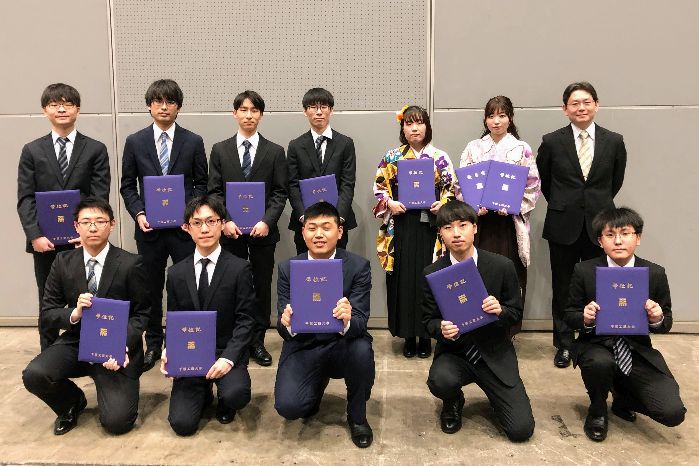
{kind=link}
2022年1月19日
卒業論文発表会が行われました。
2022年1月17日
修士論文発表会が行われました。
2021年11月21日
計測自動制御学会システム・情報部門学術講演会2021（オンライン開催）において下記2件の発表を行いました。
- 今井順一, 桶田拓弥, "視界推定に基づくユーザとシステムとの間の「状況認識のズレ」の認識"
- 飯田春樹, 今井順一, "VR環境におけるフリーハンドでのフリック文字入力UIの改善"
2021年11月19日
国際会議 The 3rd International Symposium on Engineering and Technology (ISET 2021; Taichung, Taiwan とオンラインのハイブリッド開催) において下記の発表を行い、Honorable Mention Oral Presentation に選ばれました。
- Jun-ichi Imai and Taiga Kiyomiya, "Wearable Pedestrian Guidance System that Detects Latent Risks and Guides User by Vibration"
2021年11月7日
生命ソフトウェア・感性工房・而立の会 合同シンポジウム2021（オンライン開催）において下記の発表を行いました。
- 徳増ことの, 今井順一, "スマートグラスを用いた姿勢変動に頑健な手書き支援システム"
2021年10月25日
下記の論文が IEICE Transactions on Information and Systems に採録されることが決定しました。
- Yuta Suzumura and Jun-ichi Imai, "Effectiveness of 'Neither-Good-Nor-Bad' Information on User's Trust in Agents in Presence of Numerous Options"
2021年9月7日
学部3年生11名が新メンバーとして今井研究室に加わりました。
2021年9月1日
卒業論文中間発表会が行われました。
2021年6月17日
第18回コンピューテーショナル・インテリジェンス研究会（オンライン開催）において下記の発表を行いました。
- 飯田春樹, 今井順一, "VR環境におけるフリック文字入力に適したフィードバック手法の検討"
2021年4月2日
下記の論文が International Journal of Affective Engineering に採録されることが決定しました。
- Shinku Yokoyama and Jun-ichi Imai, "Conditions under which 'Neither-Good-Nor-Bad' Information Works Effectively on User's Trust in Agents"
2021年4月1日
今井研究室12年目は教員1名、大学院生2名、学部4年生11名の体制でスタートです。
2020年度
2021年3月22日
今井研究室の大学院修士課程2年生1名、学部4年生9名が、コロナ禍を乗り越え無事修了・卒業を迎えました。おめでとう！ 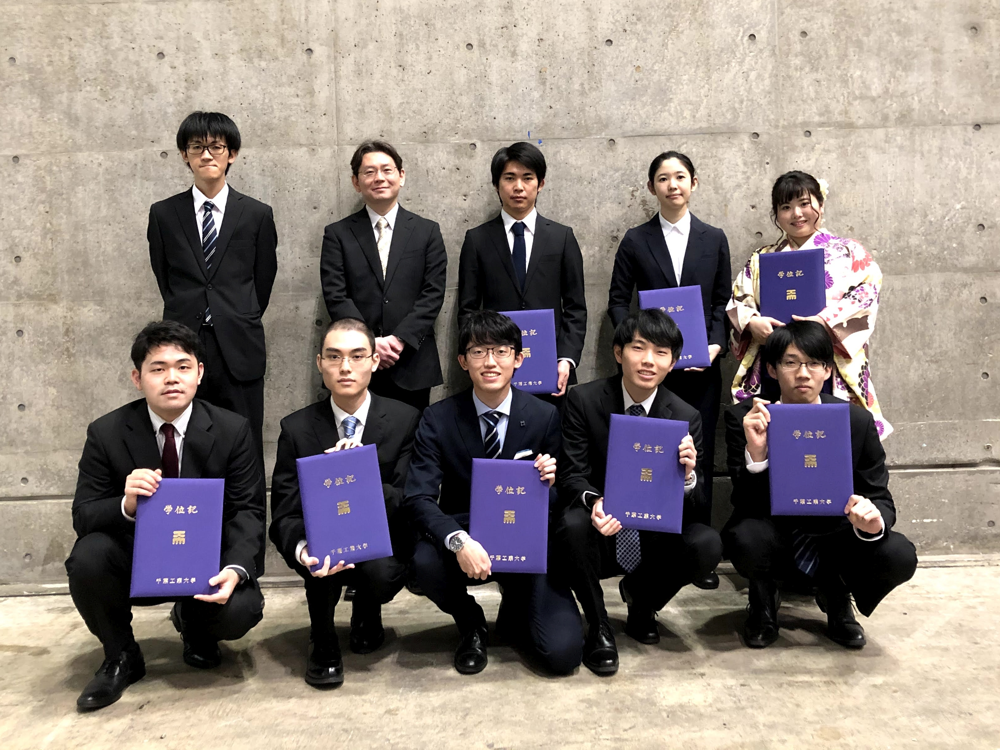
{kind=link}
2021年3月10日
2020年度福岡工業大学総合研究機構情報科学研究所講演会（福岡工業大学）において下記の講演を行いました（招待講演）。
- 今井順一, "ユーザの視界推定に基づく「相手の立場に立った」支援が可能な知能システム"
2021年1月19日
卒業論文発表会が行われました。
2021年1月12日
修士論文発表会が行われました。
2020年12月7日
国際会議 Joint 11th International Conference on Soft Computing and Intelligent Systems and 21st International Symposium on Advanced Intelligent Systems (SCIS & ISIS 2020; オンライン開催) において下記の発表を行いました。
- Tomoya Ishige and Jun-ichi Imai, "Peripheral Notification That Does Not Interfere with User's Concentration by Interactive Projection"
2020年11月12日
今井教授が令和2年度前期グッドレクチャー賞（対象科目：「情報処理」）を受賞しました．
2020年11月8日
生命ソフトウェア・感性工房・而立の会 合同シンポジウム2020（オンライン開催）において下記2件の発表を行いました。
- 深田智康, 今井順一, "画像の周波数特性と特徴点の分布を用いたテクスチャレス領域抽出手法"
- 飯田春樹, 今井順一, "RGB-Dカメラとトラッキングカメラを用いた一人称視点での前景物体半透明表示"
2020年9月8日
国際会議 The 2020 International Conference on Kansei Engineering and Emotion Research (KEER 2020; オンライン開催) において下記の発表を行いました。
- Shinku Yokoyama and Jun-ichi Imai, "Effects of Magnitude of Profits Brought by 'Neither-good-nor-bad' Information from Agents"
2020年9月7日
卒業論文中間発表会がオンラインで開催されました。
2020年8月31日
学部3年生11名が新メンバーとして今井研究室に加わりました。
2020年4月7日
緊急事態宣言の発令に伴い、2020年度の授業開始日が5月18日（月）に再度繰り下げられました。 詳細は改めて連絡がありますので注意してください。
2020年4月1日
波乱の幕開けとなってしまいましたが、教員1名、大学院生2名、学部4年生9名の体制で今井研究室11年目のスタートです。
2019年度
2020年3月26日
新型コロナウィルスの影響により、2020年度の授業開始日が5月4日（月）に繰り下げられました。 詳細は改めて連絡がありますので注意してください。
2020年3月22日
学位記授与式こそ中止となりましたが、今井研究室の大学院修士課程2年生1名、学部4年生11名が無事修了・卒業を迎えました。
おめでとう！ 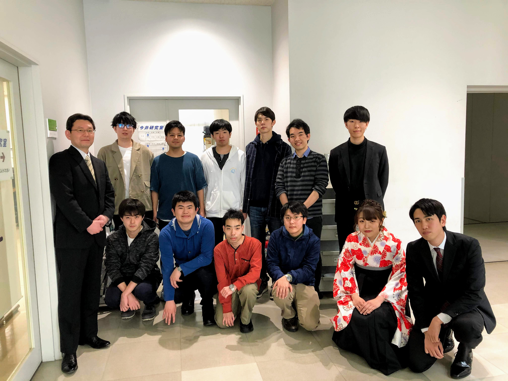
{kind=link}
2020年2月28日
今年度の学位記授与式は中止となりました。
学位記の受け渡しについては改めて連絡がありますので注意してください。
2020年2月8日
卒業論文発表会が行われました。
2020年2月6日
修士論文発表会が行われました。
2019年12月12日
映像情報メディア学会年次大会2019における下記発表が学生優秀発表賞を受賞しました。
- 深田智康, 今井順一, "ユーザ頭部追跡と円筒型リアプロジェクションスクリーンを利用した疑似立体投影"
2019年12月5日
国際会議 The 20th International Symposium on Advanced Intelligent Systems and 2019 International Conference on Biometrics and Kansei Engineering (ISIS 2019 & ICBAKE 2019; Jeju Island, Korea) において下記の発表を行いました。
- Jun-ichi Imai, Yoshiaki Morita, and Shin-ya Sakaguchi, "Influence of Relationship between Users and Life-Like Agents on Task Performance"
2019年11月24日
生命ソフトウェア・感性工房 合同シンポジウム2019（公立はこだて未来大学）において下記2件の発表を行い、 うち1件が優秀発表賞を受賞しました。
- 深田智康, 今井順一, "ユーザ視点を考慮した円筒型疑似立体投影システムの提案とその評価"
（優秀発表賞） - 森田義章, 今井順一, "ユーザの姿勢に応じた測定が可能な非接触心拍測定システム"
2019年11月7日
下記の論文が電子情報通信学会論文誌Dに採録されることが決定しました。
- 作本賢吾, 今井順一, "「可もなく不可もない」情報の提示がエージェントへの信頼感に及ぼす影響"
2019年10月18日
展示会 CEATEC 2019（幕張メッセ）に研究紹介ブースを出展しました。
4日間で450名超の方々にお越しいただき、貴重な情報交換をさせていただきました。 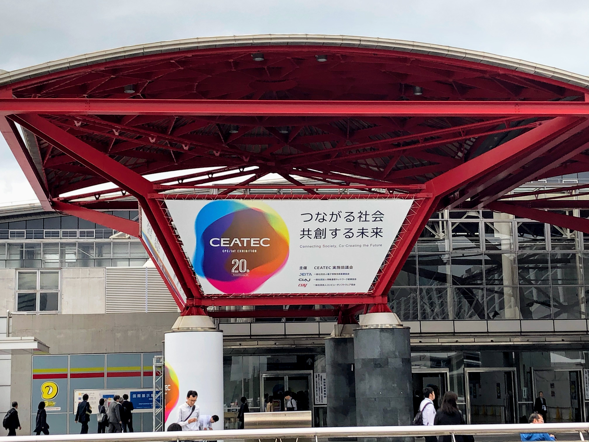 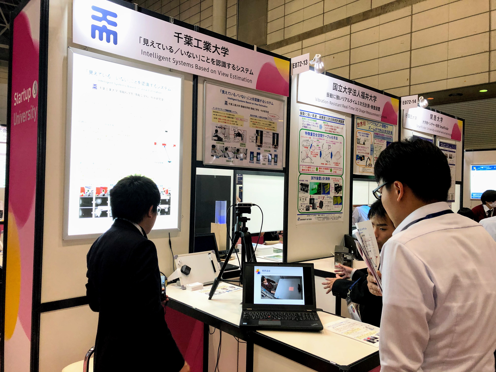
{kind=link}
{kind=link}
2019年9月14日
第21回日本感性工学会大会（芝浦工業大学）において下記の発表を行いました（招待講演）。
- 今井順一, "エージェントによる「可もなく不可もない」情報の提示とユーザが抱く信頼感との関係"
2019年9月6日
9月5日（木）～6日（金）の日程で、箱根へ研究室旅行に行ってきました。

2019年8月28日
映像情報メディア学会年次大会2019（東京工業大学）において下記の発表を行いました。
- 深田智康, 今井順一, "ユーザ頭部追跡と円筒型リアプロジェクションスクリーンを利用した疑似立体投影"
2019年8月27日
学部3年生9名が新メンバーとして今井研究室に加わりました。
2019年7月6日
卒業論文中間発表会が行われました。
2019年5月18日
3年振りに開催された研究室対抗フットサル大会に参加しました。
今井研究室は3戦全敗で無念の予選リーグ敗退でした。

2019年4月1日
今井研究室は節目の10年目を迎えました。
新メンバーとして大学院生1名が研究室に加わり，今年度は教員1名、大学院生3名、学部4年生11名の体制でスタートです。
2018年度
2019年3月22日
今井研究室の大学院修士課程2年生4名、学部4年生9名が無事修了・卒業を迎えました。 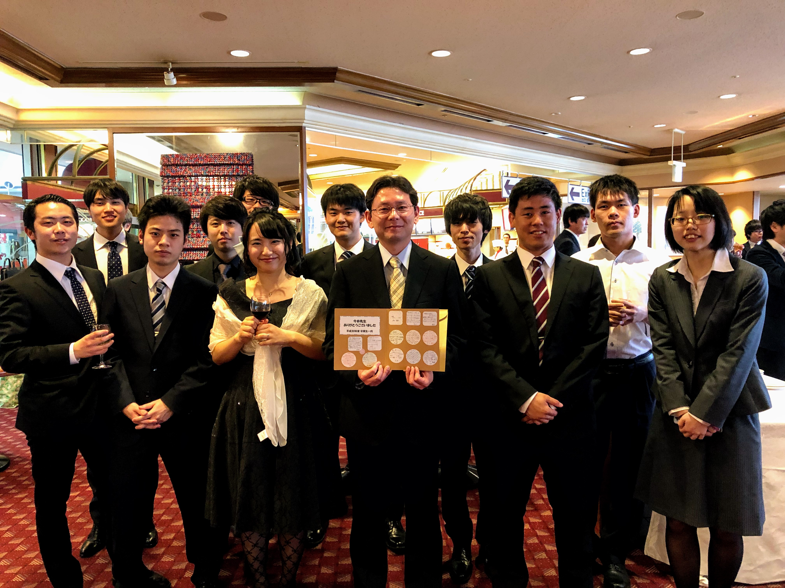
おめでとう！
{kind=link}
2019年2月9日
卒業論文発表会が行われました。
2019年2月5日
修士論文発表会が行われました。
2019年1月29日
- 今井順一, 柏木雄平, 木辻亮, "色情報と深度情報を併用した自己遮蔽に頑健な物体追跡手法"
2018年11月24日
生命ソフトウェア・感性工房・而立の会 合同シンポジウム2018（登別温泉 第一滝本館） において下記5件の発表を行い、うち1件が優秀発表賞を受賞しました。
- 乙黒実穂, 今井順一, "物体の重要度を考慮したアウェアネスマップ更新手法"
- 甲崎隆泰, 今井順一, "全方位ステレオカメラを用いた視界推定のための深度情報の補間手法"
- ダム・ミン・トゥー, 今井順一, "周囲環境の3次元構造を考慮したユーザ注意領域推定システムの改良"
- 作本賢吾, 今井順一, "ユーザの抱く期待感がエージェントへの信頼感に及ぼす影響"
（優秀発表賞） - 森田義章, 今井順一, "エージェントとの社会的関係を付与した競争効果がユーザの作業効率に与える影響"
{kind=link}
2018年9月4日
第34回ファジィシステムシンポジウム（名古屋大学）において下記4件の発表を行いました。
- 乙黒実穂, 今井順一, "動的環境における遮蔽に頑健なアウェアネスマップ更新手法"
- 作本賢吾, 今井順一, "エージェントの安定性とユーザの状況がエージェントへの信頼感に与える影響"
- 甲崎隆泰, 今井順一, "移動可能な全方位ステレオカメラによる人物視界推定システム"
- ダム・ミン・トゥー, 今井順一, "環境の点群データからの一人称視点画像の再構成及びユーザ注意領域推定"
2018年8月23日
8月22日（水）～23日（木）の日程で、小田原・伊東・沼津へ研究室旅行に行ってきました。

2018年8月21日
学部3年生11名が新メンバーとして今井研究室に加わりました。
2018年7月21日
卒業論文中間発表会が行われました。
2018年7月6日
下記の論文が「知能と情報」誌（日本知能情報ファジィ学会誌）に採録されることが決定しました。
- 山倉和樹, 今井順一, "動的環境下において複数人の同行者を誘導する自律移動ロボット"
2018年6月6日
下記の論文が International Journal of Affective Engineering 誌に採録されることが決定しました。
- Jun-ichi Imai and Shun Kurokawa, "Appropriateness of Ambiguous Facial Expressions Shown by Life-like Agents in Relation to Context of Communication"
2018年4月1日
今井研究室9年目は教員1名、大学院生5名、学部4年生9名の体制でスタートです。
2017年度
2018年3月22日
今井研究室の大学院修士課程2年生1名、学部4年生9名が無事修了・卒業を迎えました。
おめでとう！

2018年2月9日
卒業論文発表会が行われました。
2018年2月6日
修士論文発表会が行われました。
2017年11月27日
計測自動制御学会システム・情報部門学術講演会2017（静岡大学）において下記の発表を行いました。
- 今井順一, 小林藍, "動的環境における人物視界推定及びアウェアネスマップ更新"
2017年10月14日
生命ソフトウェア＆感性工房合同シンポジウム2017（岐阜大学サテライトキャンパス）において下記4件の発表を行いました。
- 甲崎隆泰, 今井順一, "全方位ステレオカメラと複数RGB-Dカメラを併用した遮蔽に頑健な視界推定システム"
- 作本賢吾, 今井順一, "擬人化エージェントの個性が社会的促進・抑制に及ぼす影響"
- 山倉和樹, 今井順一, "動的環境下で相対位置を保ちながら対象者を誘導するロボット"
- 乙黒実穂, 今井順一, "自己遮蔽に頑健な物体追跡におけるテクスチャ情報を利用した除外領域検出"
2017年10月12日
卒業論文中間発表会が行われました。
2017年9月22日
学部3年生9名が新メンバーとして今井研究室に加わりました。
2017年9月16日
国際会議 International Conference of Biometrics and Kansei Engineering 2017 (ICBAKE 2017; Kyoto, Japan) において下記の発表を行いました。
- Jun-ichi Imai and Shun Kurokawa, "Contextually Appropriate Ambiguous Facial Expressions by Life-like Agents"
2017年9月13日
第33回ファジィシステムシンポジウム（山形大学）において下記の発表を行いました。
- 山倉和樹, 今井順一, "動的環境下において対象者との相対位置を保つ自律移動ロボット"
2017年8月29日
8月28日（月）～29日（火）の日程で、横浜・箱根へ研究室旅行に行ってきました。

2017年4月1日
新メンバーとして大学院生1名が研究室に加わりました。
今井研究室8年目は教員1名、大学院生5名、学部4年生9名の体制でスタートです。
2016年度
2017年3月22日
今井研究室の大学院修士課程2年生1名、学部4年生9名が無事修了・卒業を迎えました。
おめでとう！

2017年2月8日
卒業論文発表会が行われました。
2017年2月6日
修士論文発表会が行われました。
2016年11月13日
生命ソフトウェア＆感性工房合同シンポジウム2016（福岡工業大学）において下記2件の発表を行いました。
- 山倉和樹, 今井順一, "動的環境下において複数人の同行者に案内を行う自律移動ロボット"
- 立花優斗, 今井順一, "e-learning学習者の姿勢情報に基づく集中度推定手法の検討"
2016年10月28日
学部3年生9名が新メンバーとして今井研究室に加わりました。
2016年9月29日
卒業論文中間発表会が行われました。
2016年9月10日
第18回日本感性工学会大会（日本女子大学）において下記2件の発表を行いました。
- 今井順一, 黒川旬, "文脈に応じたエージェントの「曖昧な表情」表出モデルの検討"
- 今井順一, 鈴木亮平, "表情を伴うエージェントの介在が人間同士のコミュニケーションに与える影響"
2016年9月8日
第15回情報科学技術フォーラム（富山大学）において下記の発表を行いました。
- 立花優斗, 今井順一, "e-learning学習者の上半身姿勢情報を利用した集中度推定"
2016年8月28日
国際会議 Joint 8th International Conference on Soft Computing and Intelligent Systems and 17th International Symposium on Advanced Intelligent Systems (SCIS & ISIS 2016; Sapporo, Japan) において下記の発表を行いました。
- Jun-ichi Imai, Ryota Kobayashi, Kazuya Jinjo, Hirobumi Suzuki, Kazuto Kameda, Shohei Koshikawa, and Seiya Takihara, "Interactive Projection System that Always Presents Information within User's View"
2016年8月19日
8月18日（木）～19日（金）の日程で、伊東・熱海へ研究室旅行に行ってきました。

2016年5月21日
研究室対抗フットサル大会に参加しました。 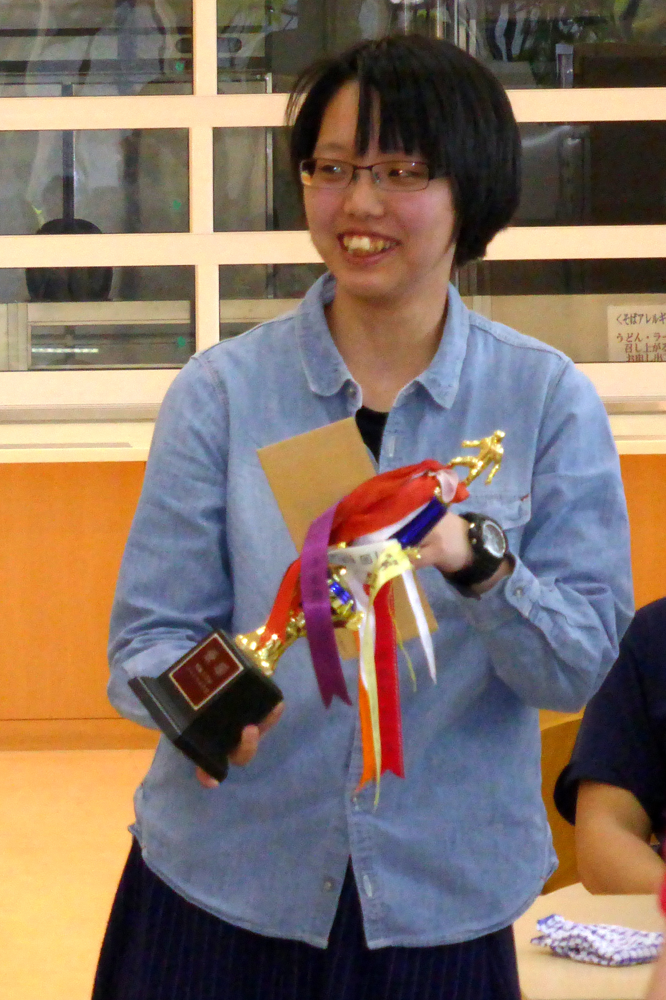 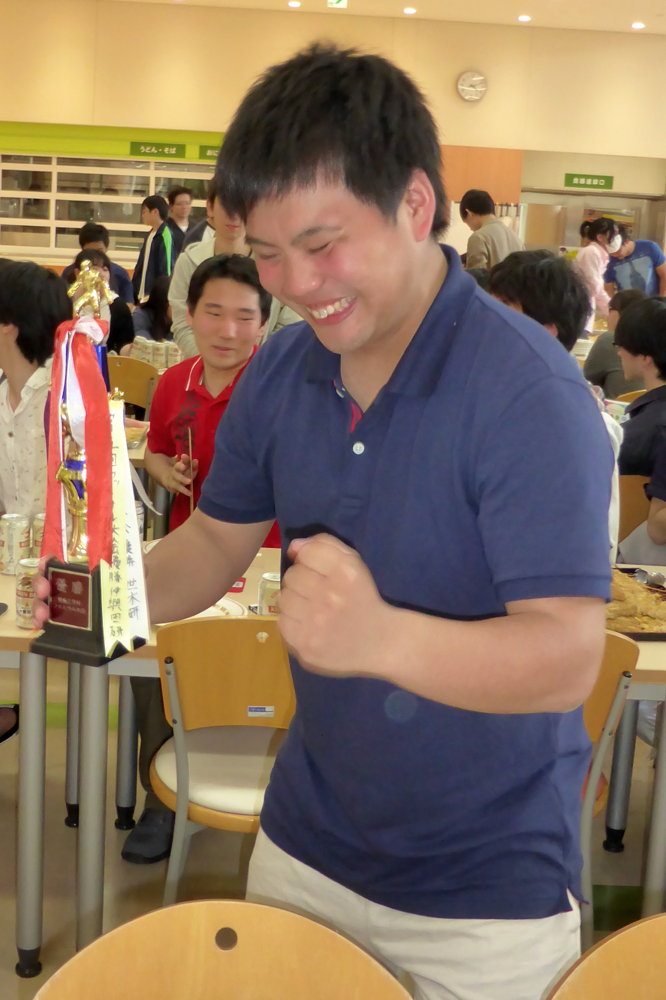
12チーム参加の中、今井研究室は悲願の初優勝を果たしました！

{kind=link}
{kind=link}
2016年4月30日
今井研究室の同窓会が行われました。 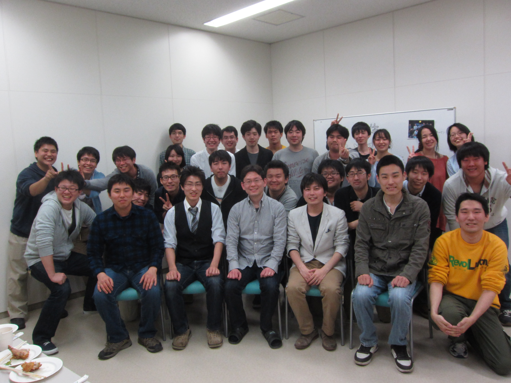
お集まりいただいた卒業生、修了生の皆様、ありがとうございました！
{kind=link}
2016年4月1日
教員1名、大学院生2名、学部4年生9名の体制で今井研究室7年目のスタートです。
2015年度
2016年3月22日
今井研究室の大学院修士課程2年生1名、学部4年生8名が無事修了・卒業を迎えました。
おめでとう！

2016年2月10日
卒業論文発表会が行われました。
2016年2月5日
修士論文発表会が行われました。
2015年11月18日
計測自動制御学会システム・情報部門学術講演会2015（函館アリーナ）において下記3件の発表を行いました。
- 福本誠, 井上誠, 今井順一, "対話型差分進化における対比較時間を利用した探索の効率化 ―香りの最適解探索において―"
- 加瀬裕之, 今井順一, "環境RGB-Dカメラからの一人称視点画像の再構成によるユーザ注意領域推定システム"
- 立花優斗, 今井順一, "学習支援システムに向けた学習者の姿勢情報に基づく学習状況推定"
2015年11月4日
学部3年生9名が新メンバーとして今井研究室に加わりました。
2015年10月20日
下記の論文が日本感性工学会論文誌に採録されることが決定しました。
- 芝智偉, 今井順一, "人物動画像とロボットの連動により話者の存在感を表出する遠隔対話システム"
2015年10月8日
卒業論文中間発表会が行われました。
2015年9月25日
国際会議 14th International Conference on Computer Information Systems and Industrial Management Applications (CISIM 2015; Warsaw, Poland) において下記の発表を行いました。
- Jun-ichi Imai and Masanori Nemoto, "Estimation of User's Attention and Awareness in Occlusion-rich Environments Using RGB-D Cameras"
2015年9月4日
第31回ファジィシステムシンポジウム（電気通信大学）において下記の発表を行いました。
- 加瀬裕之, 今井順一, "一人称視点における相対視力分布を考慮した顕著性マップに基づくユーザ注意領域推定"
2015年9月3日
第17回日本感性工学会大会（文化学園大学）において下記の発表を行いました。
- 今井順一, 神處和哉, 鈴木裕文, "ユーザの視界に追従するインタラクティブ情報投影システムの高機能化"
2015年8月26日
8月24日（月）～26日（水）の日程で、日光・鬼怒川温泉へ研究室旅行に行ってきました。

2015年6月30日
交換留学生の Ariane Spaenlehauer さんが4ヶ月の滞在を終え、研究室を離れることになりました。See you again!

2015年5月30日
研究室対抗フットサル大会に参加しました。今井研究室は12チーム中3位でした。


2015年4月1日
今井研究室6年目は教員1名、大学院生2名、学部4年生8名、交換留学生1名の体制でスタートです。
2014年度
2015年3月22日
今井研究室の学部4年生8名が無事卒業を迎えました。
おめでとう！


2015年3月3日
交換留学生1名が新メンバーとして今井研究室に加わりました。
2015年2月10日
卒業論文発表会が行われました。
2014年12月6日
生命ソフトウェアシンポジウム2014（北見工業大学）において下記の発表を行いました。
- 加瀬裕之, 今井順一, "視界推定と顕著性マップの統合による3次元でのユーザ注意領域推定"
2014年11月25日
学部3年生8名が新メンバーとして今井研究室に加わりました。
2014年11月21日
計測自動制御学会システム・情報部門学術講演会2014（岡山大学）において下記の発表を行いました。
- 今井順一, "RGB-Dカメラを用いた周囲環境に対するユーザの注意及びアウェアネスの推定"
2014年11月14日
第14回ヒューマンマシンシステム研究会（電子航法研究所）において下記の講演を行いました（招待講演）。
- 今井順一, "見えている／いないことを認識するシステム"
2014年10月9日
卒業論文中間発表会が行われました。
2014年8月29日
8月28日（木）～29日（金）の日程で、立川へ研究室旅行に行ってきました。

2014年6月28日
雨で延期になっていた研究室対抗フットサル大会に参加しました。今井研究室は9チーム中準優勝でした！
2014年5月13日
下記の論文が電気学会論文誌（C）に採録されることが決定しました。
- 佐久間涼, 今井順一, "距離情報を利用して前景物体を半透明表示する複合現実感システム"
2014年5月13日
2014年度人工知能学会全国大会（ひめぎんホールほか）において下記の発表を行いました。
- 今井順一, 前川光, 芝智偉, "人間同士のコミュニケーションにおいてエージェントの介在が及ぼす影響"
2014年4月3日
下記の研究課題が今年度の科学研究費補助金（基盤研究（C））に新規採択されました。
課題名： "常にユーザの視界内に情報提示する実環境情報投影システム"
代表者： 今井 順一
期間： 平成26-28年度
2014年4月1日
今井研究室5年目は教員1名、大学院生1名、学部4年生8名の体制でスタートです。
2013年度
2014年3月22日
今井研究室の大学院修士課程2年生2名、学部4年生8名が無事修了・卒業を迎えました。
おめでとう！

2014年2月8日
卒業論文発表会が行われました。
2014年2月5日
修士論文発表会が行われました。
2013年11月14日
学部3年生8名が新メンバーとして今井研究室に加わりました。
2013年10月27日
生命ソフトウェアシンポジウム2013（千葉工業大学）において下記3件の発表を行い、 うち1件が優秀発表賞を受賞しました。
- 佐久間涼, 今井順一, "距離情報を利用した遮蔽物体の半透明提示手法" （優秀発表賞）
- 芝智偉, 今井順一, "ロボットと人物像との連動により存在感を表出する遠隔対話システムの提案"
- 今井順一, 滝原清也, "ユーザの視界に追従するインタラクティブな情報投影システム"
2013年10月22日
下記の論文（研究速報）が電子情報通信学会論文誌（A）に採録されることが決定しました。
- 岡田翼, 今井順一, "エージェントに関する事前刺激がユーザの印象の変化過程に与える影響"
2013年10月10日
卒業論文中間発表会が行われました。
2013年9月17日
国際会議 SICE Annual Conference 2013 (Nagoya, Japan) において下記の発表を行いました。
- Jun-ichi Imai and Mitsunobu Tamegai, "Three-dimensional Estimation of User's Field of View Using Multiple RGB-D Cameras"
2013年9月11日
第29回ファジィシステムシンポジウム（大阪国際大学）において下記2件の発表を行いました。
- 佐久間涼, 今井順一, "複合現実感における距離情報を利用した前景物体の半透明表示手法"
- 芝智偉, 今井順一, "遠隔対話システムにおける人物像とロボットの連動による存在感の表出"
2013年9月4日
千葉エリア産学官連携オープンフォーラム2013（千葉大学）において下記の発表を行いました。
- 今井順一, "常にユーザの視界内に情報提示するインタラクティブな情報投影システム"
2013年8月31日
8月29日（木）～31日（土）の日程で、那須塩原へ研究室旅行に行ってきました。

2013年8月28日
国際会議 5th International Congress of International Association of Societies of Design Research (IASDR 2013; Tokyo, Japan) において下記の発表を行いました。
- Jun-ichi Imai, Hirotaka Ohkubo, and Yu Yamada, "Evaluation of Impressions Given by Life-like Agents' Ambiguous Nonverbal Expressions"
2013年6月22日
研究室対抗フットサル大会に参加しました。今井研究室は13チーム中4位でした。

2013年6月4日
2013年度人工知能学会全国大会（富山国際会議場ほか）において下記の発表を行いました。
- 今井順一, 大久保浩臣, 山田優, "エージェントによる「曖昧な情報表出」が人間に与える印象の評価"
2013年4月24日
国際会議 The 2nd Laser Display Conference (LDC 2013; Yokohama, Japan) において下記の発表を行いました。
- Jun-ichi Imai and Seiya Takihara, "Interactive Projection System that Follows User's View Using Laser Pico-Projector and RGB-D Cameras"
2013年4月1日
今井研究室4年目は教員1名、大学院生2名、学部4年生8名の体制でスタートです。
2012年度
2013年3月22日
今井研究室の大学院修士課程2年生1名、学部4年生9名が無事修了・卒業を迎えました。 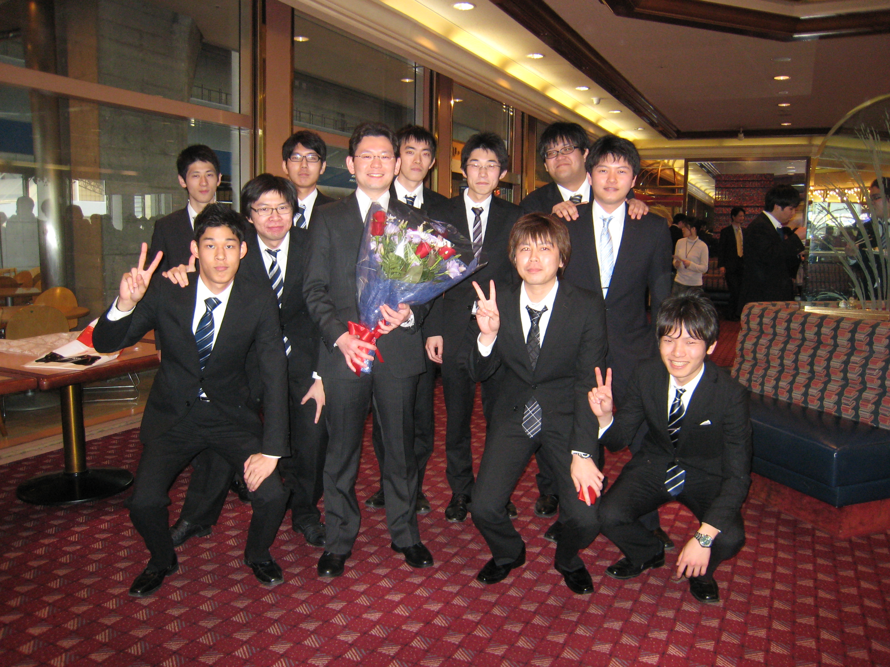
おめでとう！
{kind=link}
2013年3月22日
研究室の一時移転が終了しました。
2013年3月7日
第8回日本感性工学会春季大会（北九州国際会議場）において下記の発表を行いました。
- 窪田純一, 今井順一, "オーバーハードコミュニケーションにおける擬人化エージェント同士の対話の効果"
2013年2月27日
施設工事に伴い、研究室が下記の通り一時移転します。訪問の際はご注意ください。
移転期間： 2月27日（水）～3月22日（金）
移転場所： 4号館3階 040310 （オフィス）、4号館4階 040407 （ラボ）
2013年2月11日
日本感性工学会「志学の会」×「而立の会」合同開催 若手による研究交流会（千葉工業大学）において 下記の発表を行いました。
- 今井順一, "RGB-Dカメラを利用した3次元での人物視界・死角領域推定"
2013年2月8日
卒業論文発表会が行われました。
2013年2月6日
修士論文発表会が行われました。
2012年12月7日
学部3年生8名が新メンバーとして今井研究室に加わりました。
2012年11月23日
生命ソフトウェアシンポジウム2012（室蘭工業大学）において下記2件の発表を行いました。
- 岡田翼, 今井順一, "エージェントに関する事前刺激がユーザの印象の変化過程に与える影響"
- 今井順一, 堀江喜明, "エージェントが表出する「曖昧な表情」の文脈効果"
2012年10月4日
卒業論文中間発表会が行われました。
2012年9月6日
第11回情報科学技術フォーラム（法政大学）において下記の発表を行いました。
- 岡田翼, 今井順一, "エージェントに対する先入観が継続的インタラクションを通じた印象変化に及ぼす影響"
2012年8月23日
国際会議 11th IEEE International Conference on Cognitive Informatics & Cognitive Computing (ICCI*CC 2012; Kyoto, Japan) において下記の発表を行いました。
- Jun-ichi Imai, "Three-dimensional Field of View Estimation in Occlusion-rich Environments"
2012年8月21日
8月19日（日）～21日（火）の日程で、越後湯沢へ研究室旅行に行ってきました。 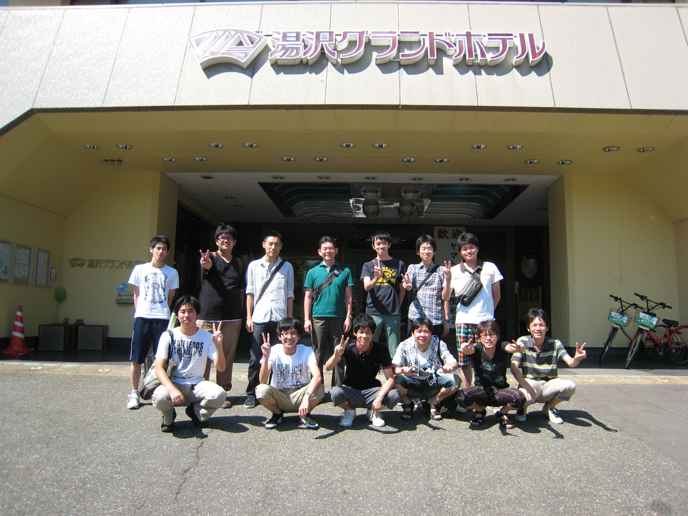
{kind=link}
2012年6月2日
研究室対抗フットサル大会に参加しました。今井研究室は13チーム中3位でした。 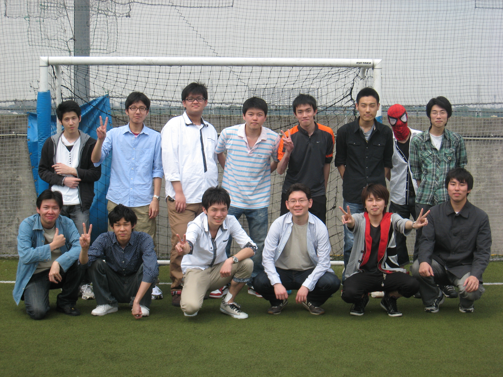
{kind=link}
2012年4月27日
国際会議 The 1st Laser Display Conference (LDC 2012; Yokohama, Japan) において、今井准教授が下記の発表を行いました。
- Jun-ichi Imai, "Estimation of User's Field-of-View for Interactive Projection System"
2012年4月1日
教員1名、大学院生3名、学部4年生9名の体制で今井研究室の3年目のスタートです。
2011年度
2012年3月22日
今井研究室4年生8名が無事卒業を迎えました。 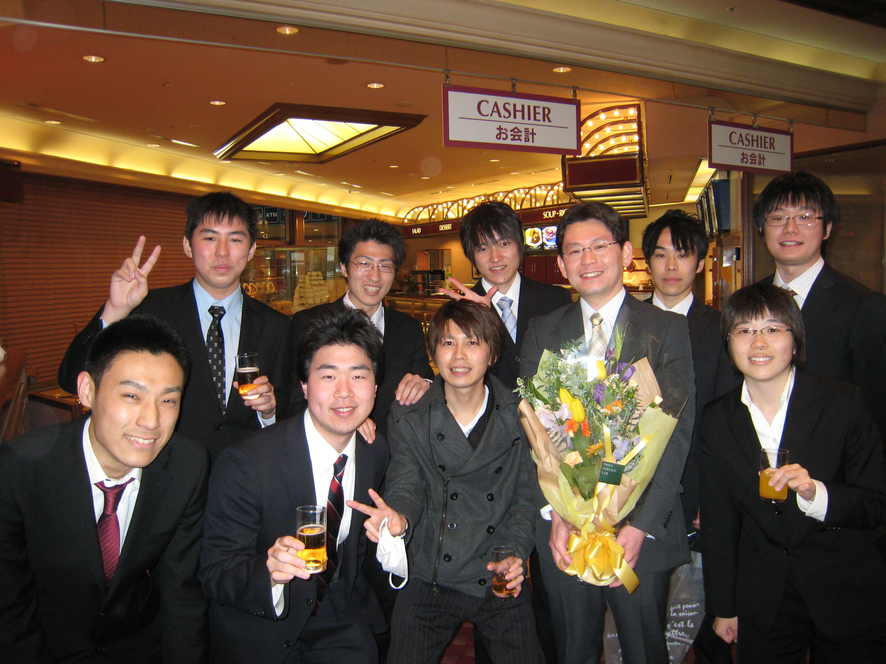
おめでとう！
{kind=link}
2012年3月3日
平成23年度電子情報通信学会東京支部学生会研究発表会（東海大学）において下記2件の発表を行いました。
- 佐久間涼, 今井順一, "Diminished Reality における影を考慮した物体除去画像の生成"
- 芝智偉, 今井順一, "人間同士のコミュニケーションにエージェントが介在することの影響"
2012年2月10日
卒業論文発表会が行われました。
2011年11月26日
生命ソフトウェアシンポジウム2011（福岡工業大学）において下記の発表を行い、優秀発表賞を受賞しました。
- 今井順一, "カメラと深度センサによる3次元での人物視界・死角領域推定" （優秀発表賞）
2011年11月10日
学部3年生9名が新メンバーとして今井研究室に加わりました。
2011年10月6日
卒業論文中間発表会が行われました。
2011年9月3日
第13回日本感性工学会大会（工学院大学）において下記の発表を行いました。
- 今井順一, "ユーザの立場に立った判断が可能な「気の利いた」人間共生システム"
2011年8月31日
8月29日（月）～31日（水）の日程で、箱根へ研究室旅行に行ってきました。 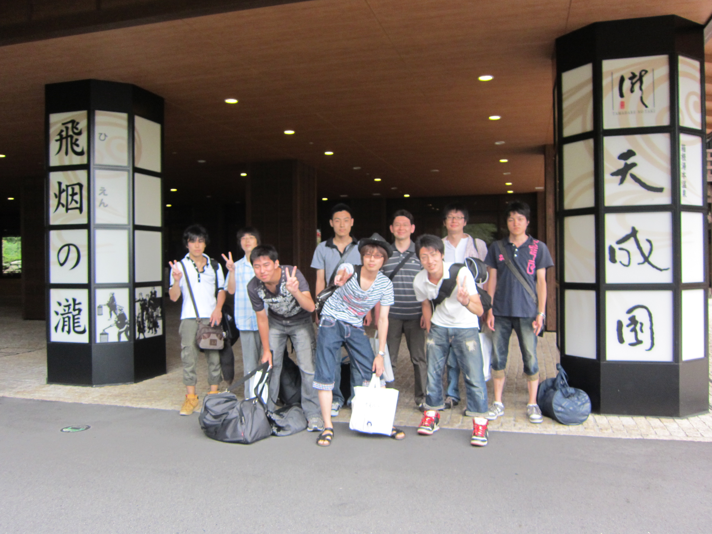
{kind=link}
2011年7月9日
研究室対抗フットサル大会に参加しました。今井研究室は14研究室中9位でした。
2011年5月17日
今井研究室が7号館9階の情報第8研究室（オフィス8、ラボ8）に移転しました。
2011年4月5日
下記の研究課題が今年度の科学研究費補助金（若手研究（B））に継続採択されました。
課題名： "周囲の人の流れを妨げることなくユーザとの同行が可能な自律移動ロボット"
代表者： 今井 順一
期間： 平成22-23年度
2011年4月1日
今井研究室の2年目は教員1名、大学院生1名、学部4年生8名の体制でスタートです。
2010年度
2011年3月22日
学位記授与式こそ中止となりましたが、今井研究室4年生3名が無事卒業を迎えました。 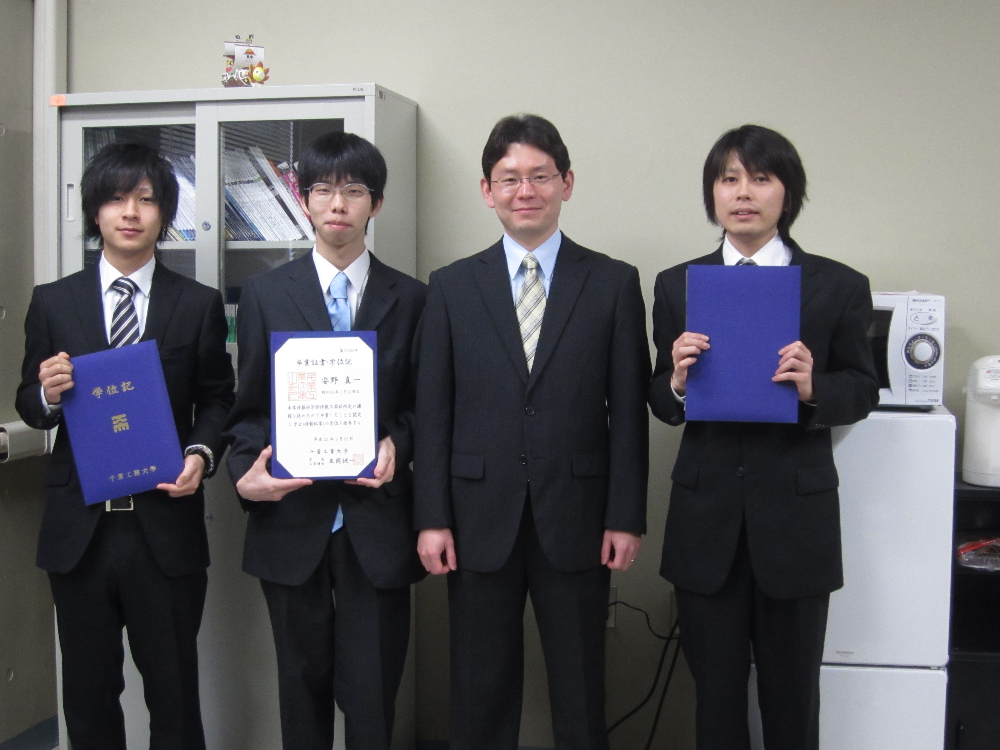
おめでとう！
{kind=link}
2011年3月18日
学位記授与式は中止となりました。
22日に津田沼キャンパスにて学位記の受け渡しがあります。
詳細は大学ウェブサイトで確認してください。
2011年3月14日
学生の皆さんは安全の確保に努めてください。
また、大学ウェブサイトでさまざまな情報提供がなされていますので留意してください。
なお、研究室のサーバは停電に伴い不定期に停止することがあります。
2011年2月10日
卒業論文発表会が行われました。
2010年11月18日
学部3年生9名が新メンバーとして今井研究室に加わりました。
2010年11月1日
電気通信大学 金子研究室と合同ゼミを行いました。
2010年10月7日
卒業論文中間発表会が行われました。
2010年9月20日
国際会議 World Automation Congress 2010 (WAC 2010; Kobe, Japan) において下記の発表を行いました。
- Jun-ichi Imai and Masahide Kaneko, "Development and Evaluation of Robot Which Recognizes User's False Beliefs Using View Estimation"
2010年9月12日
第12回日本感性工学会大会（東京工業大学）において下記2件の発表を行いました。
- 今井順一, "「気の利いた」振舞いで自律的な働きかけが可能な人間共生システム"
- 今井順一, 金子正秀, "視界推定に基づいたユーザの誤信念の認識が可能な人間共生ロボット"
2010年8月9日
下記の論文が Kansei Engineering International に採録されることが決定しました。
- Jun-ichi Imai and Masahide Kaneko, "Human Interactions with a Robot that Recognizes Difference between Fields of View"
2010年7月30日
IEEE Conference on Soft Computing in Industrial Applications (SMCia/08) ポスト講演会（室蘭工業大学）において下記の講演を行いました（招待講演）。
- 今井順一, "ユーザとの認識のズレを理解可能な「気が利く」ロボットの開発とその主観的印象評価"
2010年6月11日
今井研究室のウェブサイトを開設しました。
2010年4月6日
下記の研究課題が今年度の科学研究費補助金（若手研究（B））に新規採択されました。
課題名： "周囲の人の流れを妨げることなくユーザとの同行が可能な自律移動ロボット"
代表者： 今井 順一
期間： 平成22-23年度（予定）
2010年4月1日
今井研究室が発足しました。
教員1名、学部4年生3名でのスタートです。